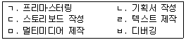
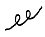
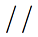

전자출판기능사 (2002-12-08 기출문제)
1과목: 출판론
1. 인쇄기를 압력을 가하는 방식에 따라 분류할 때 해당되지 않는 것은?
- 평압식
- 윤전식
- 원압식
- 오프셋식
(정답률: 87%)

2. 물과 지방이 서로 반발하는 원리를 이용한 인쇄 방식은 무엇인가?
- 그라비어 인쇄
- 스크린 인쇄
- 플렉소 인쇄
- 오프셋 인쇄
(정답률: 80%)
3. 비닐로 책의 표지를 만드는 방식으로 투명한 비닐 커버를 주머니처럼 만들어 표지를 끼우는 방식과 비닐 표지와 면지를 붙이는 방식이 가장 많이 사용되는 제책방식은?
- 스프링 제책
- 고주파 제책
- 호부장 제책
- 트윈링 제책
(정답률: 71%)
4. 제책시 접장이나 낱장을 순서에 따라 모으는 작업을 무슨 작업이라 하는가?
- 접지
- 딴쪽 붙이기
- 장합
- 제지
(정답률: 77%)
5. 팝업 북(pop-up book)에 대하여 가장 바르게 설명한 것은?
- 책을 펼치면 그림이 나오거나 입체가 완성되도록 제책한 책
- 비닐로 책의 표지를 만들어 제책한 책
- 구멍을 뚫어 바인더에 끼워서 제책한 책
- 책의 표지와 내지에 네모난 구멍을 촘촘히 뚫어 링을 구멍에 넣고 프레스로 눌러 마무리 제책한 책
(정답률: 91%)
6. 평판 인쇄용 판재의 구비조건에 해당되지 않는 것은?
- 경도가 낮아야 한다.
- 판의 신축이 없어야 한다.
- 두께가 일정해야 한다.
- 감지성이 좋아야 한다.
(정답률: 64%)
7. 평판 인쇄용 PS판의 특징과 관계가 없는 것은?
- 품질이 안정되어 있다.
- 해상력이 우수하다.
- 암반응이 있고 사용 유효기간이 길다.
- 제판관리 설비공정이 간단하다.
(정답률: 76%)
8. 다음은 사륙배판(사륙전지 16절)의 책 160쪽을 총 10,000부 인쇄하려고 한다. 손지율이 5%라고 한다면 필요 한 종이량(사륙전지)은 얼마인가?
- 50연
- 74연
- 82연
- 1⑤연
(정답률: 70%)
9. 출판 편집자가 갖추어야 할 요건이 아닌 것은?
- 여러 필자들의 특성을 파악하고 있어야 한다.
- 인쇄 작업을 혼자 해 낼 수 있어야 한다.
- 사회의 흐름에 민감해야 한다.
- 필자의 원고를 정확하게 판독 할 수 있어야 한다.
(정답률: 97%)
10. 5Y 8/13.5에서 명도를 나타내는 것은?
- 5
- 8
- 5Y
- 13.5
(정답률: 92%)
11. 빨강과 회색이 인접한 경우 회색은 청록 기미를 띄게 되는 현상은?
- 보색대비
- 명도대비
- 병치대비
- 면적대비
(정답률: 63%)
12. 어떤 특정한 출판물을 조성하기 위한 최초의 의도적 과정으로, 어떤 유형의 출판물을 낼 것인가를 사전에 결정하는 작업은?
- 출판영업
- 출판기획
- 출판편집
- 출판유통
(정답률: 95%)
13. ISSN(International Standard Serial Number)에 관한 설명이 아닌 것은?
- 연속간행물 지명에 부여된다.
- 도서에 포함된 비연속적 부록이나 특별부록에도 부여된다.
- 권호가 있는 각 개의 총서와 권호가 없는 학술총서에 부여된다.
- 권호가 없는 상업적인 출판사의 총서에는 부여되지 않는다.
(정답률: 66%)
14. 유채색에 대한 설명 중 옳지 않은 것은?
- 유채색은 명도, 채도, 색상이 있다.
- 무채색을 제외한 모든 색을 유채색이라 한다.
- 유채색을 탁색, 순색, 혼색, 무색으로 분류할 수 있다.
- 색상환에서 거리가 가까운 2가지색을 혼합해도 유채색이 된다.
(정답률: 76%)
15. 마젠타(Magenta)와 노랑(Yellow)을 감산혼합했을 때의 색은?
- 흰색(White)
- 녹색(Green)
- 파랑(Blue)
- 빨강(Red)
(정답률: 73%)
16. 1895년 미국의 월간 문예지인 bookman이 가장 잘 팔리는 여섯권의 신간서 리스트를 게제한 데서부터 생긴 말로, 원래 어떤 기간 중에 발행된 책 중에서 예상 이상으로 잘 팔리는 책에 쓰인 말은?
- 베스트 셀러(best seller)
- 패스트 셀러(fast seller)
- 스테디 셀러(steady seller)
- 핫 셀러(hot seller)
(정답률: 76%)
17. 그라비어 인쇄의 장점과 가장 거리가 먼 것은?
- 타인쇄 방식에 비해 가장 제조원가가 저렴
- 고속인쇄가 가능
- 크롬을 도금한 판은 내쇄력이 강화됨
- 풍부한 농담재현 가능
(정답률: 60%)
18. 스크린 인쇄시 판이 막혀 인쇄가 잘 되지 않는 것과 가장 거리가 먼 것은?
- 점도가 너무 높음
- 용제의 잘못 선택
- 잉크의 건조가 늦음
- 잉크량의 부족
(정답률: 53%)
19. 다음 중에서 출판물의 3대 영역으로 가장 적절한 것은?
- 신문, 방송, 잡지
- 교과서, 사전, 참고서
- 신문, 잡지, 단행본
- 교과서, 단행본, 잡지
(정답률: 67%)
20. 출판물의 정가 판매제의 장점이 아닌 것은?
- 출판사 입장에서는 수익을 정확히 예측할 수 있다.
- 독자가 어디에서나 같은 가격으로 구입할 수 있다.
- 판매이익이 같으므로 영세서점이 보호될 수 있다.
- 반품도서와 장기 재고도서를 쉽게 판매할 수 있다.
(정답률: 90%)
2과목: 전자 출판
21. 다음 중에서 전산편집용 프로그램이 아닌 것은?
- 페이지메이커
- 쿽익스프레스
- 문방사우
- 나모웹에디터
(정답률: 68%)
22. CD-ROM 책(디스크책)의 제작과정을 순서에 따라 바르게 나열한 것은?

- ㄹ-ㄴ-ㄷ-ㄱ-ㅁ-ㅂ
- ㄴ-ㄱ-ㄷ-ㅂ-ㄹ-ㅁ
- ㄹ-ㄴ-ㄱ-ㅁ-ㄷ-ㅂ
- ㄴ-ㄷ-ㄹ-ㅁ-ㅂ-ㄱ
(정답률: 82%)
23. 인터넷 출판의 일반적 특성이 아닌 것은?
- 전세계적으로 분산된 정보를 공유할 수 있다.
- 정보의 신속한 갱신과 갱신 즉시 배포가 이루어질 수 있다.
- 정보 유통의 통제가 어렵다.
- 간편한 휴대성으로 전자출판물 매체로 활용하기 용이하다.
(정답률: 28%)
24. 이것은 특수한 전자기기로서 손바닥만한 크기를 가지고 있으며, 플래시 메모리칩에 담긴 파일을 갈아가며 액정화면 스크린을 통해 내용을 읽는 디지털 시대의 서적이라고 할 수 있는 것은?
- CD-ROM
- e-book
- DTP
- FAX-BOOK
(정답률: 82%)
25. DTP(Desk Top Publishing)의 출판과정에서 반드시 하지 않아도 되는 작업은?
- 교정
- 편집레이아웃
- 출력
- 제판작업(CAMERA WORK)
(정답률: 80%)
26. 비트맵 방식의 프로그램에서 화면을 구성하는 최소 단위를 일컫는 말은?
- 툴(tool)
- 픽셀(pixel)
- 사이트(site)
- 윈도우(window)
(정답률: 93%)
27. 다음의 전자 출판물 중 패키지형에 속하는 것은?
- CD-ROM
- 비디오텍스(VIDEOTEX)
- 텔레텍스트(TELETEXT)
- BBS(Bulletion Board System)
(정답률: 81%)
28. 글자를 기계식으로 찍게 되어 있으며, 몇가지의 일정한 크기로만 프린트 되도록 되어 있고, 작고 미세한 글자 표현이 가장 어려운 프린터는?
- 레이저 프린터
- 인화지 출력기
- 도트 매트릭스 프린터
- 잉크젯 프린터
(정답률: 68%)
29. 레이저 빔 프린터에서 아웃라인 폰트로 프린트할 때 설명으로 옳은 것은?
- 도트와 도트 사이가 겹쳐 있어 글자를 정교하게 프린트 할 수 있다.
- 가느다란 잉크관을 통해 종이에 잉크를 쏘아서 프린트 한다.
- 도트와 도트 사이가 떨어져 있어 글자의 명료성이 우수하다.
- 기계식 헤드 사용으로 미세한 글자 표현이 어렵다.
(정답률: 57%)
30. CD-ROM에 디지털 데이터를 저장하는 방식을 정해 놓은 규격은?
- 그린 북(green book) 표준 포맷
- 레드 북(red book) 표준 표맷
- 옐로 북(yellow book) 표준 포맷
- 블루 북(blue book) 표준 포맷
(정답률: 59%)
31. CD-ROM 제작시에 사용되는 스토리보드(Story board)란 무엇인가?
- 일반적인 이야기 전개방식을 말한다.
- 멀티미디어 제작시 내용을 화면단위로 제시한 구체적인 작업지시서이다.
- 멀티미디어 제작 후 테스트를 하기위한 작업지시서이다.
- 기획단계에서 만들어지는 흐름도(Flow chart)이다.
(정답률: 59%)
32. 편집된 문자나 이미지의 포스트스크립트 데이터를 필름이나 인화지에 출력하기 위한 픽셀 요소로 바꾸어 주는 변환기를 무엇이라 하는가?
- OPI
- SCSI
- RIP
- OPP
(정답률: 62%)
33. 전자통신출판의 특성으로 알맞지 않는 것은?
- 신속한 정보제공, 정보전달, 정보수정이 가능하다.
- 정보의 공유성이 약하다.
- 멀티미디어적 정보를 제공할 수 있다.
- 타 매체에 대한 적응력이 우수하다.
(정답률: 91%)
34. 페이지 레이아웃용 프로그램은?
- Illustrator
- QuarkXpress
- Dimensions
- Photoshop
(정답률: 84%)
35. 컴퓨터 화면 한 페이지의 레이아웃을 완성하고 그 내용을 모니터로 확인하고 그대로 프린터를 통하여 볼 수 있는 기술은?
- WYSIWYG방식
- ICON방식
- OCR방식
- CTP방식
(정답률: 62%)
36. CD-ROM 책(디스크책)의 특징이 아닌 것은?
- 보관하기 쉽다.
- 종이책에 비해 부피가 작다.
- 영상, 음향 등의 멀티미디어 정보를 저장할 수 있다.
- 대량생산보다 소량 생산에 유리하다.
(정답률: 87%)
37. 일명 표준정보식별체제라고도 하는데 텍스트, 이미지, 동영상 등에 특정한 코드값을 붙여 디지털 문서를 식별할 수 있도록 한 것을 무엇이라 하는가?
- ISBN
- tag
- DOI
- watermark
(정답률: 56%)
38. 전자책(e-book)의 특징을 바르게 설명한 것은?
- 전용 단말기가 필요 없다.
- 기획 비용이 거의 들지 않는다.
- 종이책에 비해 포장이나 유통 비용이 거의 들지 않는다.
- 종이책과 달리 밑줄을 긋는 표시를 할 수 없다.
(정답률: 87%)
39. 컴퓨터를 이용해 원고작성, 조판, 교정, 레이아웃, 사진의 처리, 인쇄용 필름의 출력 등 종이 출판물의 제작에 필요한 작업을 처리하는 방식은?
- POD
- OCR
- DTP
- HWP
(정답률: 83%)
40. 전자출판물의 특성으로 보기 어려운 것은?
- 종이책에 비해 보관, 휴대, 검색이 편리하다.
- 종이책보다 가독성이 뛰어나지만 시간이 지남에 따라 마모가 잘된다.
- 멀티미디어 표현이 가능하여 영상 매체와 유사성이 있다.
- 내용을 열람할 수 있는 컴퓨터 또는 판독장치가 필요하다.
(정답률: 88%)
3과목: 전산 편집
41. ∨∧ 교정부호의 의미는?
- 사이 붙이기 표시
- 사이 띄우기 표시
- 위치 바꾸기 표시
- 삭제 표시
(정답률: 95%)
42. 사진 원고를 사용할 때 불필요한 부분을 없애고 가로와 세로의 비율이 레이아웃을 하려고 하는 크기와 맞지 않을때 하는 작업을 무엇이라 하는가?
- 프레임
- 스캔
- 트리밍
- 사진배치
(정답률: 88%)
43. 다음 중 잡지의 일반적 특성과 가장 거리가 먼 것은?
- 정기성
- 내용의 다양성
- 내용의 시의성
- 속보성
(정답률: 89%)
44. 인쇄 출판물의 크기를 구별하는 단위를 판형이라고 한다. 국판 전지 사이즈로 옳은 것은?
- 1090x788mm
- 1085x765mm
- 1030x728mm
- 939x636mm
(정답률: 56%)
45. 편집 레이아웃의 원리와 관련된 설명 중 적절하지 않은 것은?
- 좌우, 상하, 강약 등의 균형이 지나치게 깨어진 배치를 보게 되면 불안한 느낌을 갖게 할 수가 있다.
- 점의 특징으로는 점들이 좁은 간격을 유지하면서 일정한 흐름을 따라 놓여지게 되면 일정한 선을 느끼게 할 수가 있다.
- 서로 대립하는 요소가 이웃해서 나란히 서게 되면 두 요소 각자의 개성을 느끼기 어렵게 만드는 면이 있다.
- 일정한 크기나 모양의 글자가 진행되다가 굵고 큰 글씨가 끼어들 경우 끼어든 글씨가 강조되는 효과가 있다.
(정답률: 74%)
46. 출판물 편집시 문자를 선택할 때 주의할 점으로 옳지 않은 것은?
- 어린이용 책의 본문글자는 성인용에 비하여 큰 것이 좋다.
- 가독성 좋은 본문 글자체로는 고딕체(돋음체)보다 명조체(바탕체)가 좋다.
- 편안하게, 또 빨리 읽게 하려면 글자 간격이 너무 넓지 않게 한다.
- 행간은 넓으면 넓을수록 읽기 편하다.
(정답률: 78%)
47. 편집 디자이너가 알아두어야 할 유의 사항으로 적절하지 못한 것은?
- 인쇄방법이 적당한지 검토한다.
- 인쇄 제작 공정에서 나타나는 문제점은 미리 체크하지 않아도 된다.
- 적절한 인쇄 업체를 선정하는 것이 중요하다.
- 제작 완료 시점을 예상하여 가공 처리 기간을 결정한다.
(정답률: 84%)
48. 다음 중 가장 정교한 색상 표현과 높은 해상도의 인쇄가 요구되는 경우는?
- 흑백 단행본 본문
- 신문
- 만화 본문
- 고급 상품 카탈로그
(정답률: 82%)
49. 다음 중 가급적 본래의 자간을 좁히지 않고 본문을 편집하는 것이 바람직한 출판물은?
- 청소년 잡지
- 교양서적
- 교과서
- 단편 소설 모음집
(정답률: 72%)
50. 평판 스캐너로 사진을 스캔하였다. 이 때 스캔된 그림파일 형식으로 맞는 것은?
- 벡터(vector)
- 비트맵(bitmap)
- 아웃라인(outline)
- XML
(정답률: 85%)
51. 두 번째 보는 교정의 명칭은?
- 재교
- 초교
- 대조교정
- 교료
(정답률: 90%)
52. 전문서적의 내용을 처음 개정하여 발행하였을 때, 판권지에 가장 바른 표기는?
- 초판 2쇄
- 초판 1쇄
- 2판 1쇄
- 재판 개정
(정답률: 59%)
53. 다음 중 잡지표지의 구성요소가 아닌 것은?
- 차례
- 제호
- 슬로건
- 년월호/권호
(정답률: 64%)
54. 다은 중 사진원고를 사용하는 목적과 가장 거리가 먼 것은?
- 본문의 이해를 돕기 위해
- 본문의 내용 가운데 특정 부분을 시각화하기 위해
- 지면의 빈 공간을 채우기 위해
- 독자의 시선을 끌기 위해
(정답률: 79%)
55. 변형폰트 중 높이(세로)보다 폭(가로)이 좁은 서체는?
- 정체
- 장체
- 평체
- 고딕체
(정답률: 77%)
56. 일반적으로 레이아웃할 때에 그림 요소와 문자 요소의 간격은 최소한 위아래로 얼마정도 떼어야 하는가?
- 1행간 이상
- 2행간 이상
- 3행간 이상
- 4행간 이상
(정답률: 62%)
57. 교정에 대한 설명 중 틀린 것은?
- 조판 인쇄 공정에서 잘못을 바로잡는 것을 교정이라 한다.
- 문자교정은 잘못 쓰인 글자나 띄어쓰기의 잘못 등을 고치는 것이다.
- 출판사에서 맨 처음 보는 교정을 초교라 한다.
- 복잡한 원고일수록 빨간색으로 교정을 보는 것이 추세이다.
(정답률: 65%)
58. 안내서, 설명서 등으로 사용되는 가제본 된 소책자의 일종이며, 인쇄, 제책 등이 고급스러운 것을 지칭할 때 사용하는 용어는?
- 브로슈어(brochure)
- 리플릿(leaflet)
- 팸프릿(pamphlet)
- DM(direct mail)
(정답률: 73%)
59. 교정의 지시는 교정기호(校正記號)로 하고 있는데, 다음에 예시하는 것들 중 앞뒤 글자의 위치를 바꿀 때 쓰이는 기호는?


(정답률: 89%)
60. 글자꼴에 대한 설명으로 적절한 것은?
- 일반적으로 고딕체는 인쇄물의 본문에 많이 사용된다
- 대개 명조체는 획이 굵기 때문에 제목용으로 많이 사용된다.
- 본문의 글자 크기는 제목의 글자보다 가급적 크게 하는 것이 좋다.
- 본문 글자를 먼저 지정한 다음 제목, 리드, 캡션 등의 글자를 정하는 것이 좋다.
(정답률: 53%)